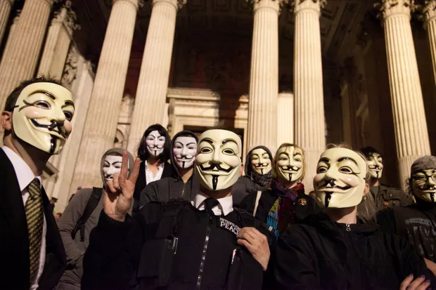
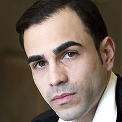
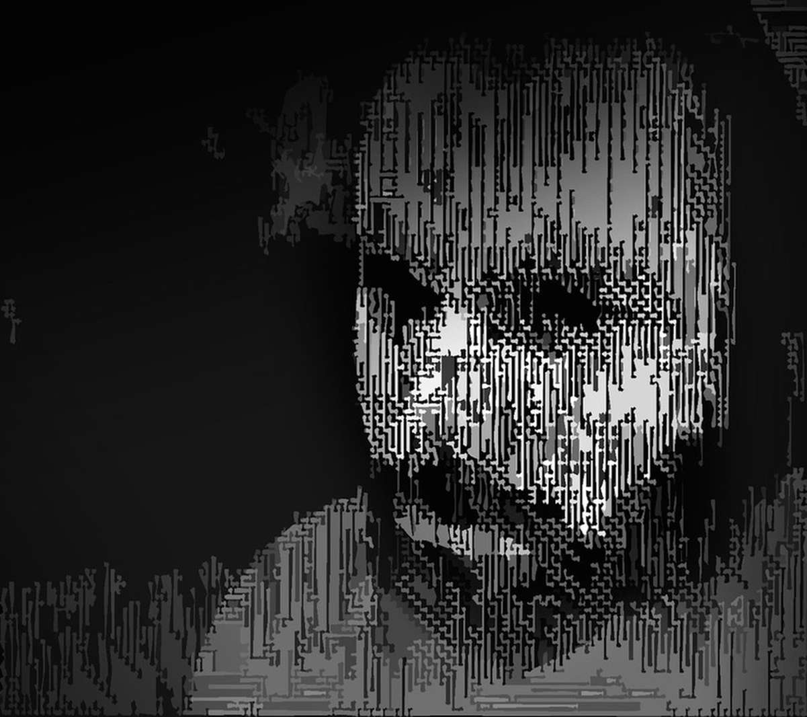

Um dos pioneiros entre os hackers norte-americanos, Kevin Mitnick começou a atuar ainda adolescente. Em 1981, foi acusado de roubar manuais de computadores da Pacific Bell. Em 1982, sua invasão ao Departamento de Defesa dos EUA (NORAD, North American Defense Command) inspirou o filme "Jogos de Guerra", de 1983. Em 1989, ele invadiu a rede da Digital Equipment Corporation (DEC) e copiou os softwares da empresa. Mitnick ganhou notoriedade porque a DEC era a maior fabricante de computadores da época. Ele acabou sendo detido, condenado e levado para a prisão. Quando estava em liberdade condicional, ele invadiu os sistemas de correio de voz da Pacific Bell. Durante sua carreira de invasões, Mitnick não explorou o acesso e os dados obtidos. Embora se acredite que ele tenha obtido total controle da rede da Pacific Bell, Mitnik não tinha intenção de explorar os resultados. O objetivo era provar que isso era possível. Ele foi preso pelo incidente na Pacific Bell, mas conseguiu fugir e se escondeu por mais de dois anos. Quando foi capturado, voltou para a prisão pelos crimes de fraude eletrônica e fraude tecnológica. Mitnick acabou sendo considerado herói, mas segundo a Wired, em 2014, ele lançou o "Mitnick's Absolute Zero Day Exploit Exchange", que vende exploits de programas de software críticos e sem correções pela melhor oferta.

O Anonymous começou a agir em 2003 nos painéis de mensagens do 4chan, em um fórum sem nome. O grupo não é muito organizado e não está preocupado com justiça social. Por exemplo, em 2008, o grupo arranjou confusão com a Igreja da Cientologia e começou a tirar seus sites do ar, o que acabou afetando suas classificações de busca no Google e sobrecarregou os aparelhos de fax da igreja com imagens totalmente em preto. Em março de 2008, um grupo de "Anons" (diminutivo de "anônimos") desfilou por perto de centros de Cientologia do mundo todo usando as agora famosas máscaras de Guy Fawkes. Conforme observado pelo The New Yorker, embora o FBI e outras agências de segurança pública tivessem rastreado alguns dos membros mais ativos do grupo, a falta de uma hierarquia real tornou quase impossível eliminar o Anonymous completamente.
Em 2001, Adrian Lamo, 20 anos, usou uma ferramenta de gerenciamento de conteúdo desprotegida no Yahoo para alterar um artigo da Reuters e incluir uma citação falsa atribuída ao ex-procurador geral John Ashcroft. Em geral, Lamo invadia sistemas e avisava a imprensa e as vítimas. Em alguns casos, ele ajudava a limpar toda a bagunça com a intenção de melhorar a segurança. Conforme observado pela Wired, entretanto, Lamo acabou indo longe demais em 2002, quando invadiu a intranet do The New York Times e se adicionou à lista de fontes especializadas para começar a fazer pesquisas sobre figuras públicas do alto escalão. Como ele costumava perambular pelas ruas só com uma mochila e não tinha endereço fixo, Lamo ganhou o apelido de "The Homeless Hacker" (Hacker sem-teto). Em 2010, já com 29 anos, Lamo descobriu que era portador da Síndrome de Asperger, uma forma branda de autismo que costuma ser chamada de "síndrome geek", pois pessoas com Asperger têm dificuldade de interagir socialmente, se comportam de forma incomum e são muito focadas. Muitos especialistas acreditam que isso explica o envolvimento de Lamo com esse mundo da cultura hacker. A Síndrome de Asperger, segundo dizem, é muito comum entre os hackers.

Segundo o New York Daily News, Gonzalez, apelidado de "soupnazi", começou como "líder problemático dos nerds de computador", durante o ensino médio, em Miami. Ele acabou se tornando membro ativo do site criminoso de vendas Shadowcrew.com e foi considerado um de seus melhores hackers e moderadores. Aos 22 anos, Gonzalez foi detido em Nova York por fraude de cartão de débito relacionada ao roubo de dados de milhões de contas. Para se esquivar da prisão, tornou-se informante do Serviço Secreto, denunciando membros do Shadowcrew. No tempo em que atuou como informante remunerado, Gonzalez e um grupo de cúmplices continuaram exercendo atividades criminosas e roubaram mais de 180 milhões de cartões de contas-salário de empresas como OfficeMax, Dave and Buster's e Boston Market. A The New York Times Magazine observa que o ataque de Gonzalez em 2005 à cadeia de lojas norte-americana TJX foi a primeira violação de dados em série de informações de crédito. Usando injeção de SQL, esse famoso hacker e sua equipe criaram portas secretas em diversas redes corporativas para roubar cerca de US$ 256 milhões só da TJX. Durante sua sentença, em 2015, o procurador federal considerou "sem precedentes" a vitimização humana de Gonzalez.

Matthew Bevan e Richard Pryce são hackers britânicos que invadiram diversas redes militares em 1996, incluindo a Base da Força Aérea de Griffiss, a Agência do Sistema de Informação de Defesa e o Instituto de Pesquisa Atômica da Coreia (KARI). Bevan (Kuji) e Pryce (Datastream Cowboy) foram acusados de quase darem início a uma terceira guerra mundial quando despejaram pesquisas do KARI em sistemas militares dos EUA. Bevan alega que queria provar uma teoria da conspiração de OVNI e, segundo a BBC, seu caso lembra o de Gary McKinnon. Mal-intencionados ou não, Bevan e Pryce demonstraram que até as redes militares são vulneráveis.

Jeanson James Ancheta não tinha qualquer interesse de invadir sistemas de dados de cartão de crédito, nem de interromper redes para fazer justiça social. Ancheta só tinha curiosidade de saber como funcionavam os bots, robôs com base em software capazes de infectar e até controlar sistemas de computador. Usando uma série de "botnets" de larga escala, ele conseguiu comprometer mais de 400.000 computadores em 2005. Segundo a Ars Technica, ele então alugou essas máquinas para agências de publicidade e foi pago para instalar diretamente bots ou adware em sistemas específicos. Ancheta foi condenado a 57 meses de prisão. Sua sentença foi marcada como a primeira vez que um hacker foi preso por usar uma tecnologia de botnet.

Em fevereiro de 2000, o adolescente de 15 anos Michael Calce, também conhecido como "Mafiaboy", descobriu como assumir o controle de redes de computadores de universidades e usou seus recursos combinados para corromper o mecanismo de pesquisa número um da época: o Yahoo. Em uma semana, ele ainda derrubou a Dell, o eBay, a CNN e a Amazon usando um ataque de negação de serviço (DDoS) dedicado, que sobrecarregou servidores corporativos e interrompeu a operação dos sites. Esse alerta de Calce talvez tenha sido o mais assustador para investidores e adeptos da Internet. Se o maior site do mundo, avaliado em mais de US$ 1 bilhão, foi desbancado com tanta facilidade, os dados on-line estão mesmo seguros? Não é exagero dizer que a criação de leis sobre crime virtual repentinamente se tornou prioridade para o governo, graças ao trabalho do Calce.
Em 1983, o jovem Poulsen, de 17 anos, usando o codinome Dark Dante, invadiu a ARPANET, rede de computadores do Pentágono, mas logo foi descoberto. O governo decidiu não processar Poulsen, que era menor de idade, na época, e ele acabou recebendo apenas uma advertência. Poulsen não ligou a mínima para a advertência e continuou com as atividades de hacker. Em 1988, ele invadiu um computador federal e acessou arquivos que pertenciam ao presidente deposto das Filipinas, Ferdinand Marcos. Descoberto pelas autoridades, Poulsen desapareceu. Enquanto esteve na ativa, Poulsen se manteve ocupado invadindo arquivos do governo e revelando segredos. Segundo seu próprio site, em 1990, ele invadiu um concurso de uma emissora de rádio para conseguir ser a 102ª pessoa a ligar. Ganhou como prêmio um Porsche novinho, uma viagem e US$ 20.000. Poulsen logo foi preso e proibido de usar computador por três anos. Desde então, reinventou-se e se tornou jornalista. Hoje ele escreve sobre segurança de computadores como editor sênior da Wired.
Usando o codinome cOmrade, Jonathan James invadiu o sistema de diversas empresas. Mas de acordo com o New York Times, o que deu a ele notoriedade foi ter conseguido invadir os computadores do Departamento de Defesa dos Estados Unidos. O mais impressionante é que, na época, James tinha apenas 15 anos. Em entrevista para a PC Mag,James admitiu que sua inspiração seria, em parte, o livro The Cuckoo’s Egg, que detalha a caça a um hacker de computador nos anos 80. Com essa invasão ele conseguiu acessar mais de três mil mensagens dos funcionários públicos, nomes de usuários, senhas e outros dados confidenciais. James foi detido em 2000 e sentenciado a seis meses de prisão domiciliar e proibido de usar o computador para fins recreativos. No entanto, uma violação da pena o levou para a cadeia durante seis meses. Jonathan James se tornou o mais jovem condenado por violar as leis do crime virtual. Em 2007, a loja de departamentos TJX teve seu sistema invadido, comprometendo informações privadas de inúmeros clientes. As autoridades suspeitaram que James estivesse envolvido, mas nunca conseguiram provas. Jonathan James acabou se matando com um tiro na cabeça em 2008. Segundo o Daily Mail, James escreveu o seguinte em sua carta suicida: “Eu não acredito no sistema da"justiça". Talvez minhas ações hoje, juntamente com esta carta, transmitam às pessoas uma mensagem mais forte. De qualquer forma, perdi o controle dessa situação, e esta é a única maneira de consegui-lo de volta”.

Este é um hacker diferente dos outros desta lista, pois nunca foi identificado publicamente. No entanto, segundo o Register algumas informações foram divulgadas sobre o ASTRA, mais precisamente quando ele foi capturado pelas autoridades em 2008. Ele era um matemático grego de 58 anos. Dizem que ele invadiu sistemas do Dassault Group por quase cinco anos. Durante esse tempo, roubou programas de software de tecnologia para armas de última geração e também dados, que vendeu a 250 pessoas pelo mundo. Essa invasão custou ao Dassault Group um prejuízo de US$ 360 milhões. Ninguém sabe ao certo por que sua verdadeira identidade não foi divulgada, mas, em sânscrito, a palavra Astra significa "arma". Alguns desses hackers engenhosos queriam fazer do mundo um lugar melhor, enquanto outros queriam provar teorias alienígenas. Uns estavam atrás de dinheiro, outros de fama, mas todos eles tiveram um papel importante na evolução da cibersegurança.
